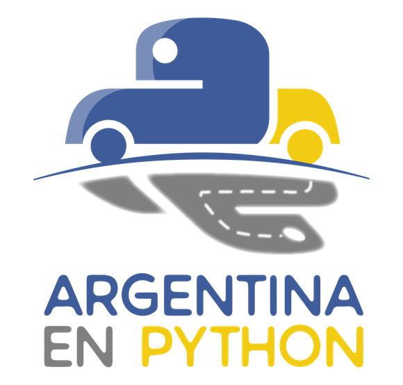
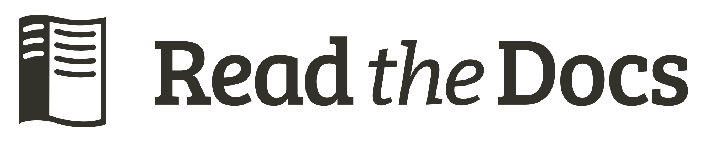

Cómo obtuve trabajo remoto gracias a la comunidad de Python
(y cómo tú también puedes hacerlo)
¡Advertencia!
Es la primera vez que doy una charla no-técnica
Son sólo mis opiniones
Los consejos dados puede que no apliquen a tu situación
Sobre mi
¿Quién soy?
Santos Gallegos
Machala
Empecé (intenté) a estudiar programación a los ~16
Entré a la Universidad de Cuenca
La mayoría de profesores nunca tuvo experiencia profesional real
Situación del país
El desarrollo de software no está tan avanzado en el país
Nadie se lo toma en serio
Mala paga
Lo único bueno son de empresas extranjeras con sucursales locales
Pero sólo están en grandes ciudades
No todo está perdido
Django Girls Cuenca (2017)
Organizado por
Argentina en Python

Conocí a Manuel Kaufmann y Johanna Sánchez
Empecé a ayudarles a organizar eventos
Trabajo Remoto
Manuel me propuso "trabajar para el" contribuyendo al proyecto Read the Docs

Luego de un par de meses, me ofrecieron hacer pasantías con ellos
Al final de las pasantías me ofrecieron seguir trabajando con ellos
¿Cómo pasó todo?
Cómo puedes hacer que te pase a ti
Estudia de verdad
Aprende inglés
Lee libros
Lee desde la documentación oficial
Lee de blogs, mira videos
Comprende lo que pasa por debajo
Haz preguntas
Enseña a otros
No les creas todo a los profesores
Date a conocer
Participa activamente en la comunidad
Crea un blog
Construye tu marca
Sube tus proyectos personales a GitHub
Contribuye a otros proyectos
Twitter, StackOverflow, Hackerrank
Aprende a buscar soluciones por ti mismo
Conoce tu entorno
Aprende a escribir buen código
Aprende una cosa a profundidad, no muchas cosas a medias
No hay título universitario de Developer, Arquitecto
No lo hagas por dinero, haz lo que más te gusta